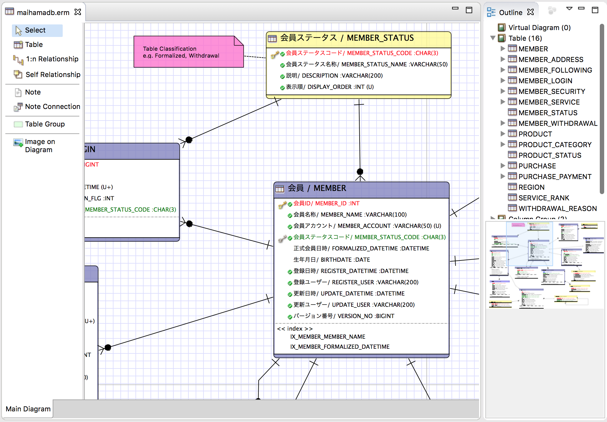
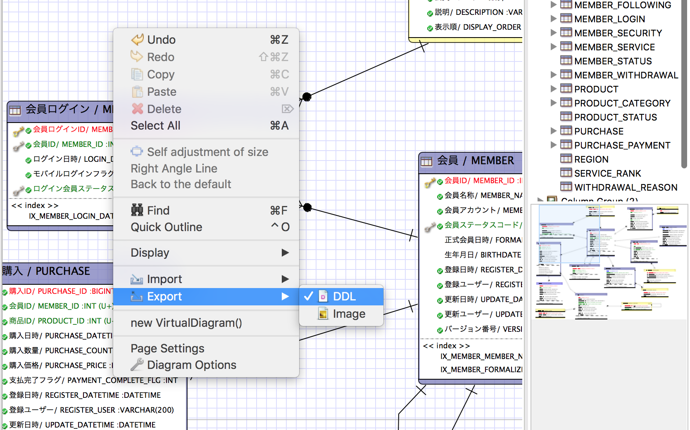
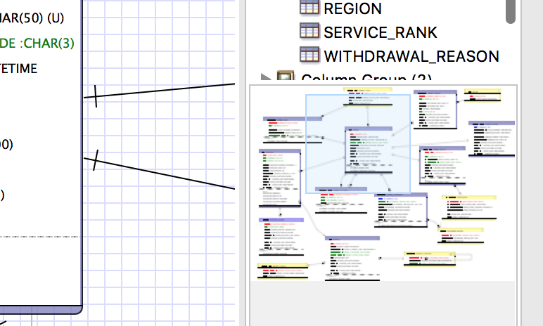
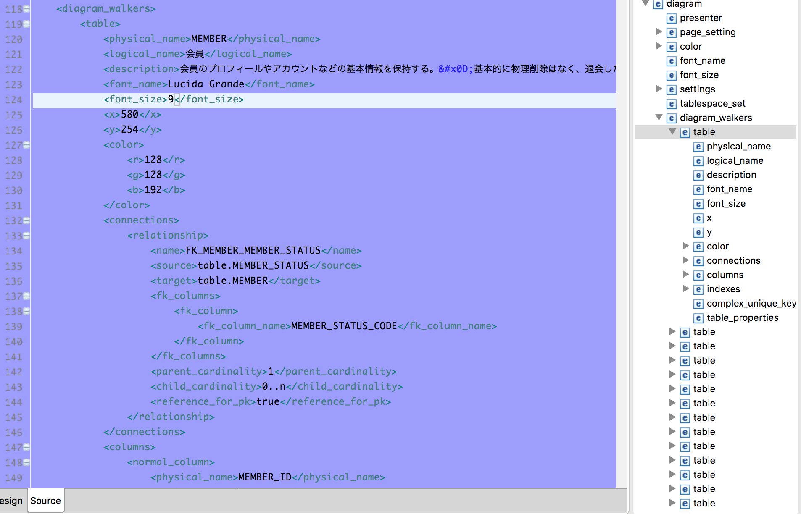
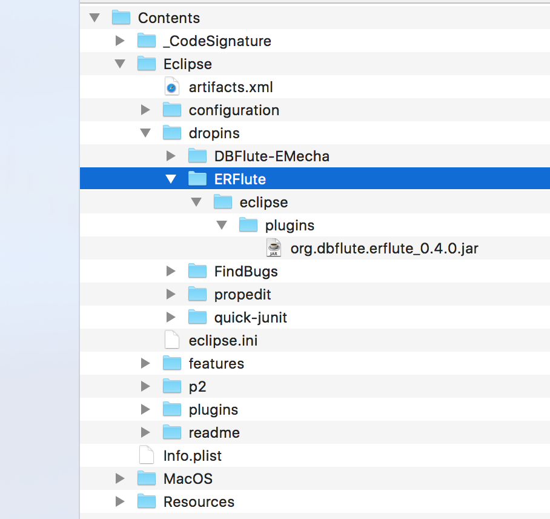
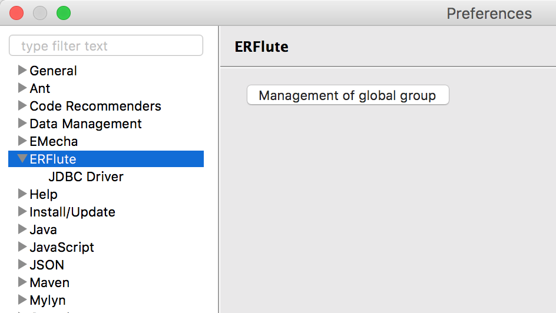
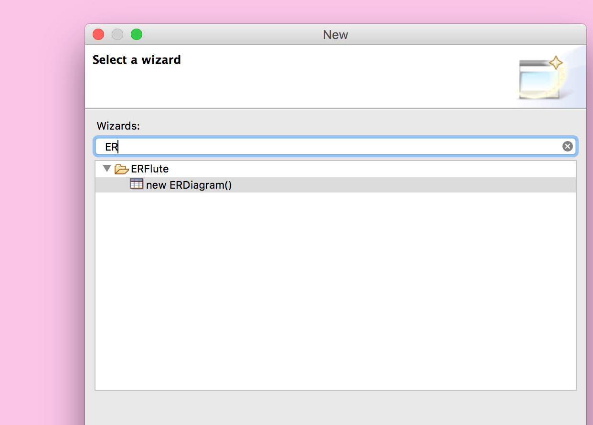
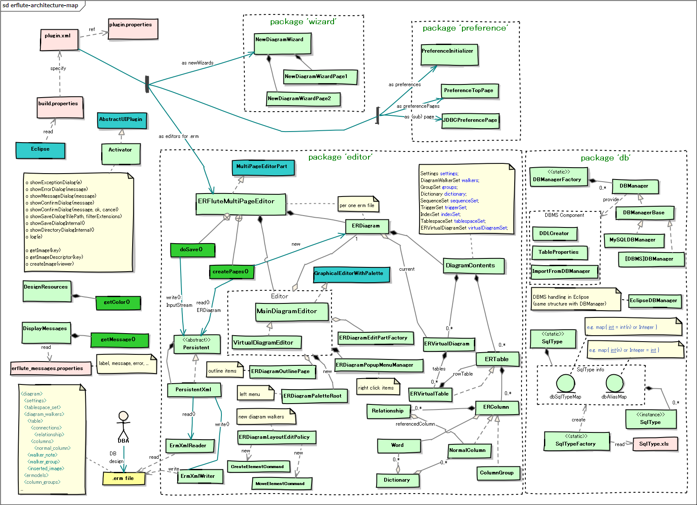
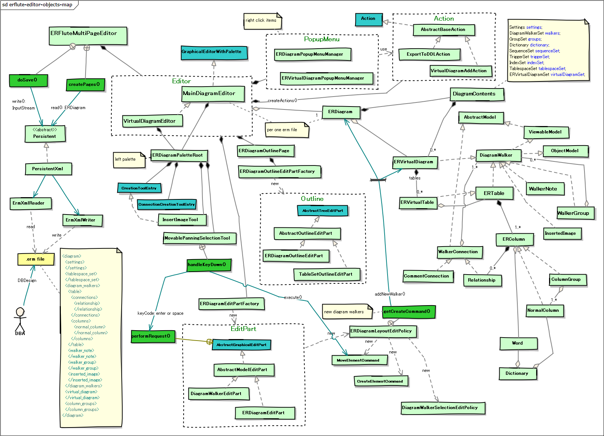

ERFlute
DBFluteプロジェクトが提供するライブラリ ERFlute のページ。
${indexlist}ERFluteとは？
Eclipse Pluginとして作成された マージできるERDツール です。
ERMaster をフォークした ERMaster-b をフォークしています。
スタートアップ＆インクリメンタル開発のために
スタートアップ＆インクリメンタル開発では、テーブルが少ない時代から大規模な時代を経て、様々な特徴的な悩みが発生します。 複数人で同時にDB設計をすることも想定されますし、ドキュメント整備の時間もなかなかとれません。 チームでの議論やレビューのために正確な ERD は欲しいが、変更も激しく本番との同期も難しいです。
その中でぜひやりたい "ERDを描いてDDLを出力してDBを作ってクラスを自動生成して...(の繰り返し)" という ERDドリブンスタイル を支えるツールとして、 ERFlute が活躍できればいいなと。
そのために、三つの大きな特徴を持っています。
特徴1. シンプルbutグラフィカル
シンプルなERDツールでありながら、嬉しいグラフィック表現を持っています。
- テーブル間のカージナリティの表現 (0:n, 1:n)
- テーブルのフォントや背景色の変更
- ダイアグラム上でのノートやグループ
ERFluteの概観
図 : ERFluteの概観 
{kind=link}
特徴2. シンプルbutファンクショナル
シンプルなERDツールでありながら、ポイントを抑えた機能を持っています。
- 対象DBMS用のDDL出力
- ダイアグラムモニターによるダイアグラムの移動
- Outlineによるテーブル検索、対象テーブルへの移動 (control+O)
- 仮想ダイアグラムでカテゴリごとのモデリング
DDLのエクスポートメニュー
図 : DDLのエクスポートメニュー 
{kind=link}
ダイアグラムモニター
図 : ダイアグラムモニター 
{kind=link}
Outlineによるテーブル検索
図 : Outlineによるテーブル検索

特徴3. マージできるERD
複数人での同時DB設計でもマージしやすい保存形式になっています。
保存される ".erm" ファイルの中身は XML になっていて、保存時のランダム要素が少ないため、よほど同じ項目を同時に修正しない限りはgitでの自動マージが効きやすい形になっています。
ermファイルのxml
図 : ermファイルのxml 
{kind=link}
オープンソースとして
スタートアップ＆インクリメンタル開発では、高額なERDツールも買えません。 複数人でDB設計をやるとなるとライセンス料も大きなものとなります。それゆえにオープンソースのERDツールという存在が大切です。
ただ、オープンソースのERDツールの開発は容易なことではなく、継続的な開発は非常に厳しいものです。 それゆえ、みんなでメンテナンスができるような構成にすることが大切で、シンプルな状態をキープしていく必要があります。
そこで、ERFluteの開発テーマは、以下のようになっています。
- プルリクをもらいやすくするために、コードをできるだけシンプルに
- 利用頻度の低い機能をばっさり削除 (他のツールでできることは他のツールに任せる)
- その代わり、ERDのコア機能での細かなユーザビリティを向上に集中
ERFluteのインストール
前提となるEclipse
Eclipse-4.4.2 以上である必要があります。また、Java8の実行環境(JRE)が必要です(@since 0.5.0)。
"Eclipse for Java Developer" で問題なく動作する想定ですが、もしそれで動かない場合は、Marketplace から PDE (Plug-in Development Environment) のインストールしてみてください。
Jarファイルのダウンロード
jarファイルはこちら: org.dbflute.erflute_0.5.7.jar
Jarファイルのdropinsへの配置
これを、Eclipse の dropins に以下のように配置して、Eclipseを再起動します。
e.g. ERFlute to dropins @Directory
...
|-dropins
| |-ERFlute
| | |-eclipse
| | |-plugins
| | |-org.dbflute.erflute_0.5.7.jar
| |
| |-...
|-...
図 : ERFluteのdropinsへの配置 (MacOSX) 
{kind=link}
インストールの確認
そして、Preferences の項目に ERFlute があればインストールされています。
図 : preferencesの項目にERFlute 
{kind=link}
ERFluteの使い方
右クリックメニューから New - Others... で、ERFlute を探します。
図 : ERFluteの新規ダイアグラムの作成 
{kind=link}
ERFluteの詳しい使い方は、How-toドキュメントをご覧ください。
フォークの歴史
ERMasterの良いところ
非常に素晴らしいツールです。オープンソースのERDツールで、これほどの品質で提供されているのは本当に素敵なことです。 (開発されたorg.insightechの方々には感謝しています)
- グラフィック的な表現力の高さ e.g. リレーションシップやテーブル背景色など
- 検索性能の高さ e.g. テーブル検索など
- 豊富なDBMS対応 e.g. DDL出力など
- 細かい現場フィット e.g. ノート、カテゴリ、DBコメント出力など数え切れず
ERMasterのあともうちょい
もうちょいこうなると嬉しいと思うところです。
- テーブル数が多くなると動きが遅くなる (大規模開発対応)
- 保存されるXMLのランダム性が高く、マージができない (複数人開発対応)
- 翻訳機能や辞書機能の扱いが難しい (振り回されることの方が多い...要らないという声も)
- 利用頻度の低い機能がたくさんありコードが膨大で拡張が難しい
- データ型周りのロジックが複雑でちょっとした型の追加修正が難しい
ERMaster-bの良いところ
そして、フォークされた ERMaster-b は、あともうちょいのところをがだいぶ改善されています。 (開発されたnaoki-iwamiさんには感謝しています)
- 大量テーブルでも動きが遅くならない
- 仮装モデルの導入で、図がでかすぎる問題も解決
- アウトライン(ctrl+O)による手軽なテーブル検索
- テーブルダイアログやカラムダイアログをEnterやSpaceで開く
- リレーションシップを引いた時のデフォルトカージナリティを0..*に
- リレーションシップを引いた時のデフォルトFK名を設定 (無名FK問題の回避)
- MySQLにて、データ型のリストボックスで、よく利用される型だけ優先表示
- DDL出力でFKの無効化がデフォルトでされてしまうのを抑制
- (あとは、いろいろありすぎて忘れました...)
ERMaster-bのあともうちょい
主に、仮装モデルを導入したことによる影響です。
- メインモデルでノートやカテゴリが使えない
- 描画がちょっと変になることがある
そして、ERFluteは...
ERMaster でのあともうちょい、ERMaster-b でのあともうちょいを直し、 シンプル性をキープしながら、スタートアップ＆インクリメンタル開発でフィットしやすいERDツールを目指していきます。
※XMLを修正しているため、ERFluteで編集したものはERMaster(-b)では開けません。
まずは引き算の修正
- 翻訳機能を削除 (シンプル化のため、暴発して変な名前になることもあるため)
- 辞書機能を削除 (シンプル化のため、時々トラブルもあるため)
- 変更履歴機能を削除 (他のツールでできるだめ)
- Hibernateのクラス自動生成を削除 (他のツールでできるだめ)
- HTML,Excel出力機能を削除 (他のツールでできるだめ)
- 日本語表示を削除 (英語とのダブルメンテはつらいため)
- Viewオブジェクトの機能を削除 (ERDで管理する必要があまりないため)
- トリガーの機能を削除 (ERDで管理する必要があまりないため)
- カラム自動作成Relationship追加機能を削除 (選択肢を減らして使い方をシンプルにするため)
- N:NのRelationship追加機能を削除 (選択肢を減らして使い方をシンプルにするため)
- PhysicalName と LogicalName の連携機能を削除 (意味のないLogicalNameにならないように)
- 細かい使わなそうな機能を削除
※やっぱり欲しい機能であれば、また整理整頓した上で追加します。それよりもまずはシンプル化を。
そしてポイントとなる修正
- o 保存のたびにXMLの順序が変わらないように (ID参照をやめて名前参照にするなど)
- o 閲覧だけでXMLが変わらないように (その代わり、直前の閲覧情報は保持されない)
- o XMLのシンプル化、手でも修正できるくらい (不要なタグ削除、定義順序など)
- o XMLのファイルサイズが 1 / 3 くらいに (wordタグの削除、空タグの削除)
- o テーブル名やカラム名や制約名のユニークチェック (XMLの固定化のためにも必要)
- o PhysicalName を必須に (XMLの固定化のためにも必要)
- o ユニーク制約名、インデックス名を必須に (XMLの固定化のためにも必要)
- o FK制約名のデフォルト値設定、入力促進 (XMLの固定化のためにも必要)
- o FKカラム選択時に自動カラム作成オプション (カラム自動作成1:nを削除した分)
- v コードのがっつりリファクタリング (永遠にやり続ける)
- x データ型マッピングのシンプル化 (新しいデータ型追加のために、でもまだできてない)
ERMasterからの移行
そのままファイル開いて移行
そのまま、.ermファイルを ERFlute で開いて保存すれば移行完了です。
移行の流れ、ちゃんと確認もしましょう
- ERMasterをアンインストール
- ERFluteをインストール
- ermファイルをERFluteで開く (ERMaster形式のXMLを読み込み)
- テーブルダイアログ開いて特に何もせず閉じて保存 (ERFlute形式でXMLを保存)
- いったんそのermファイルを閉じる
- もう一度ermファイルをERFluteで開く
- DDL出力して、ERMasterのときのDDLと変化がないことを確認
- 模擬的なDB変更をして期待通りのDDLになることを確認 (確認後は忘れずに変更を破棄しましょう)
※トリガーなど、ERFluteで削除された機能を利用している場合はDDLが同じにはならない可能性あり。
※一度、ERFluteに移行したら、ERMasterやERMaster-bでは開けません。
コミッタ向け情報
Githubリポジトリ
- Github Page
- https://github.com/dbflute-session/erflute
- Pull Request Branch
- develop
コンパイル環境
- Eclipse Version
- Eclipse-4.4.2 (Luna)
- Java Version
- Java8 @since 0.5.0 (Java7 before 0.5.0)
ERFluteアーキテクチャマップ
ERFluteアーキテクチャマップ 
{kind=link}
ERFlute Editor ClassWorldマップ
ERFlute Editor ClassWorldマップ 
{kind=link}
プルリクリクエスト
以下の機能を募集しています。
- ★リバース処理にて、MySQLのJDBCドライバー 8.0.x だと、権限テーブルを見てしまう!?
- ☆☆☆Constraint Name for UNIQUE KEYを指定すると、MySQLのDDLが実行できない
- ☆☆☆テーブル名の規則で背景色が自動的に設定されるように
- ☆☆仮想ダイアグラムを作成した時に、すぐにその仮想ダイアグラムを開く
- ☆☆仮想ダイアグラムごとに見た目の色々な設定を保存できる
- ☆テーブル選択すると、リレーションシップ線が光る
- ☆ダイアグラム上のテーブルのカラムを選択して Enter や Space でカラム詳細の表示
- ☆リレーションシップの線に色をつけたりして区別できるように
- ☆Oracleにて、シーケンスを独立して取り扱うことができない (今はトリガーとセットになっちゃってる)
- テーブル名やカラム名の大文字小文字を統一するオプション (2018/05/16)
- コマンドラインからDDLや画像ファイルを出力できるように (2018/07/30)
- Compound Unique Key の設定が強烈にわかりづらい
- MySQL-5.7 の generated column 対応 (詳しくはDBFluteML参照)
- MySQL-5.7 の FULLTEXT idxcontent (content) WITH PARSER ngram (詳しくはDBFluteML参照)
- リレーションシップのテーブルを選ぶ直前でテーブル名検索 (or テーブル指定のFK貼り) from okubo
- デフォルトカラーを業務ごとに保存して選べるように from okubo
- 仮想ダイアグラムを削除できない
- DDLの改行コードをLFに統一するオプション (ERMasterからの移行キープのためにデフォルトは変えない)
- 仮想ダイアグラムにて、選択テーブルとその子テーブルを一緒に持ってくる機能
- グループ名を修正した後の再描画
- アウトライン上で選択した仮想ダイアグラムを Enter や Space で開く
- 複数オブジェクト（テーブル、FKの線等）をまとめてマウスで移動
- カラムグループの順序固定
- 何も変更してないのに、ちょっと操作するだけで変更ファイルになる (本当に変更されたときだけ変更ファイルに)
- FK削除で自動カラム作成されたFKカラムが中途半端に残ってしまう (開き直せば消える)
- DDLやImage出力時に、変更の保存を促す (保存確定させてから出力の方が安心)
- FK作成ダイアログで、データ型食い違いのバリデーション (現状、データ型が全然違くても作れてしまう)
- FK作成ダイアログで、FKカラムを選択したら new column のチェック外す
- FKカラムの編集画面で、データ型のサイズが変更できてしまう (データ型と同様、変更できなくていい)
- Self Relationship も、1:n Relationship にドッキング
- Table Group が使い物になってない
- SqlType.xls 運用をやめたい (もっと手軽にデータ型を追加できるようにしたい)
- データ型リストボックの優先表示をもっとまともな実装で
- ソースコードが警告だらけ
- よくわからないコメントアウト
- 中身のないif文
- 英語がところどころあやしい
- ところどころで文字化け
- done ノートを消そうとするとNullPointerException
- done 仮想ダイアグラムのイメージ出力
- done 自動カラム作成で作ったFKを削除した後にXML上でnullになってしまってファイルを開けない
- done ColumnGroupの編集で自分自身のグループ名と重複エラーになってしまう
- done FK作成ダイアログで、すぐにFK制約名の入力 (現状、一度作ってからじゃないと指定できない)
- done ☆☆☆仮想ダイアグラムでテーブルをドラッグ＆ドロップしたときの再描画
- done ☆☆☆仮想ダイアグラムの名前の変更のメニューがキー値そのまま
- done ☆☆☆仮想ダイアグラムの名前の変更のダイアログで文字化け
- done ☆☆☆ノートの背景色のデフォルトをもうちょい良い色に
- done ☆☆仮想ダイアグラムを空文字で作れてしまう
- done ☆Export to DDLで、Output Fileに存在しないパスを入れるとNullPointerException発生
- done ☆起動した直後の再描画 (現状カラム名が表示されない)
その他実装情報
- 管理しづらいので message の properties は、徐々に使わない方向で。(ハードコードしていきます)
- 不要な "this." は削除していく方向で
- 不要な空行は削除していく方向で
- Tablespaceの機能は必要だろうか？ (Oracleだと嬉しい？)
テストの方法
- plugin.xml を Plug-in Manifest Editor で開く
- Overviewタブで、Launch an Eclipse application リンクをクリックする
- Eclipse がもう一個起動するので、そこで ERFlute の動作確認をする